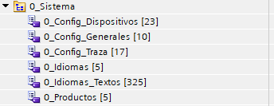

Configuración de sistema
Con el fin de simplificar el uso y la configuración del sistema, se utilizan constantes globales para definir la dimensión del programa del PLC. Para ello, están creadas las siguientes tablas de variables:

0_Config_Dispositivos
Esta tabla es la encargada de configurar la cantidad de dispositivos que se declararan en el programa.
- N_MAX_DISP_AGRUP
- Número máximo de agrupaciones de alarmas/manuales.
- N_MAX_DISP_EA
- Número máximo de dispositivo entrada analógica.
- N_MAX_DISP_ED
- Número máximo de dispositivo entrada digital.
- N_MAX_DISP_FF
- Número máximo de dispositivo flip flop.
- N_MAX_DISP_FF_SEC
- Número máximo de dispositivo flip flop secuencial.
- N_MAX_DISP_M
- Número máximo de dispositivo motor.
- N_MAX_DISP_M_SINA
- Número máximo de dispositivo motor sinamics.
- N_MAX_DISP_M_VF
- Número máximo de dispositivo motor variador.
- N_MAX_DISP_MEDIA
- Número máximo de dispositivo media.
- N_MAX_DISP_MEDIA_VOLUMEN
- Número máximo de dispositivo media volumen.
- N_MAX_DISP_PID
- Número máximo de dispositivo PID.
- N_MAX_DISP_SA
- Número máximo de dispositivo salida analógica.
- N_MAX_DISP_SD
- Número máximo de dispositivo salida digital.
- N_MAX_DISP_TOT
- Número máximo de dispositivo totalizador.
- N_MAX_DISP_TQ
- Número máximo de dispositivo tanque.
- N_MAX_DISP_TQ_AE
- Número máximo de dispositivo tanque aire estéril.
- N_MAX_DISP_V
- Número máximo de dispositivo válvula.
- N_MAX_DISP_VD
- Número máximo de dispositivo válvula desviadora.
- N_MAX_MUX_DISP
- Número máximo de multiplexados.
- N_MAX_TOF
- Número máximo de temporizador TOF.
- N_MAX_TON
- Número máximo de temporizador TON.
- N_MAX_TONR
- Número máximo de temporizador TONR.
- N_MAX_TP
- Número máximo de temporizador TP.
0_Config_Generales
Esta tabla es la encargada de configurar la cantidad parámetros generales, alarmas generales, entidades, dispositivos dentro de entidades, número de entidades en los procesos, numero de buffer de informes y la constante de FIN_PROCESO para su uso en los procesos para terminarlos.
NOMBRE | DESCRIPCION |
FIN_PROCESO | Constante para finalizar los procesos |
N_MAX_PINT | Número máximo de parámetros enteros |
N_MAX_PREAL | Número máximo de parámetros reales |
N_MAX_ENTIDAD_PROCESO | Número de entidades dentro de los procesos |
N_MAX_ENTIDAD | Número máximo de entidades |
N_MAX_ENTIDAD_DISPOSITIVOS | Número máximo de dispositivos dentro de las entidades |
N_MAX_ALARMAS | Número máximo de alarmas |
N_MAX_ALARMAS_HMI | Número máximo de variables de alarmas para HMI/Scada |
N_MAX_INF_BUFFER | Número máximo del buffer de informes |
0_Config_Traza
Esta tabla es la encargada de configurar la cantidad del buffer de trazabilidades, así como la definición de las categorías.
- N_MAX_TRAZA_BUFFER
- Número máximo del buffer de trazabilidad
- TRAZA_CAT_1_EVENTOS
- Categoría de eventos de sistema.
- TRAZA_CAT_2_MANUALES
- Categoría de manualizaciones.
- TRAZA_CAT_3_P_REAL
- Categoría de cambios en parámetros reales.
- TRAZA_CAT_4_P_INT
- Categoría de cambios en parámetros enteros.
- TRAZA_CAT_5_PID
- Categoría de cambios en PID.
- TRAZA_CAT_6
- Categoría reserva.
- TRAZA_CAT_7
- Categoría reserva.
- TRAZA_CAT_8
- Categoría reserva.
- TRAZA_CAT_9
- Categoría reserva.
- TRAZA_CAT_10
- Categoría reserva.
- TRAZA_CAT_11
- Categoría reserva.
- TRAZA_CAT_12
- Categoría reserva.
- TRAZA_CAT_13
- Categoría reserva.
- TRAZA_CAT_14
- Categoría reserva.
- TRAZA_CAT_15
- Categoría reserva.
- TRAZA_CAT_16
- Categoría reserva.